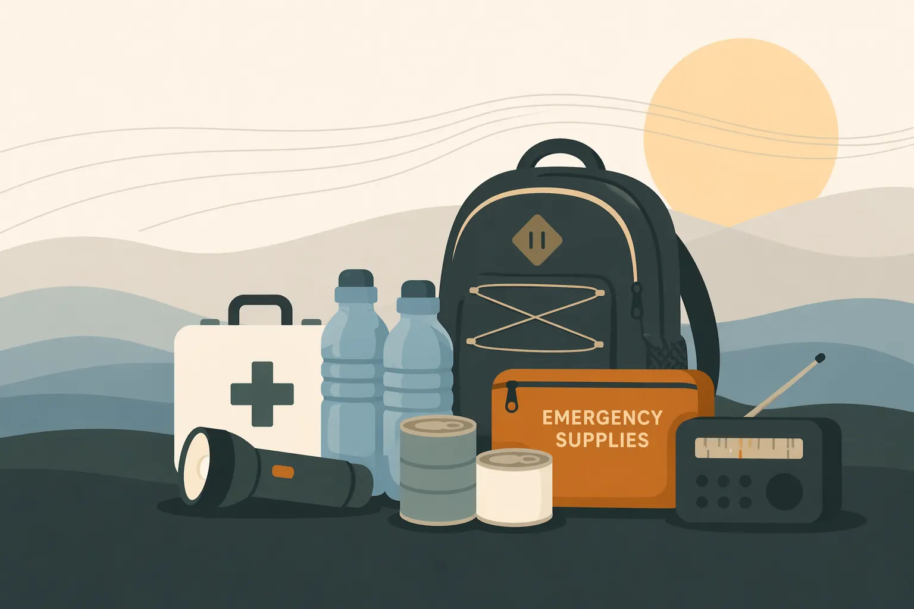
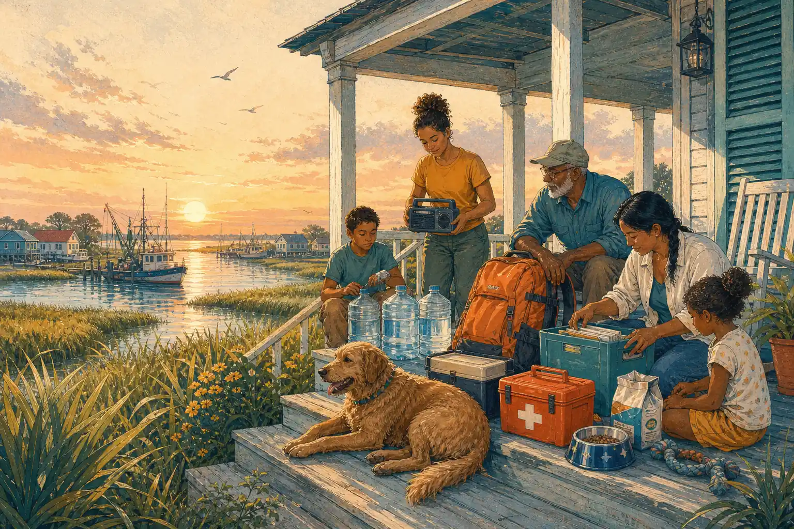
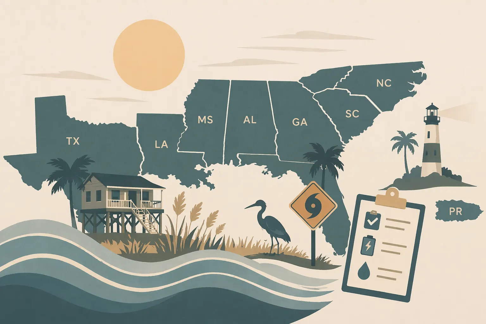
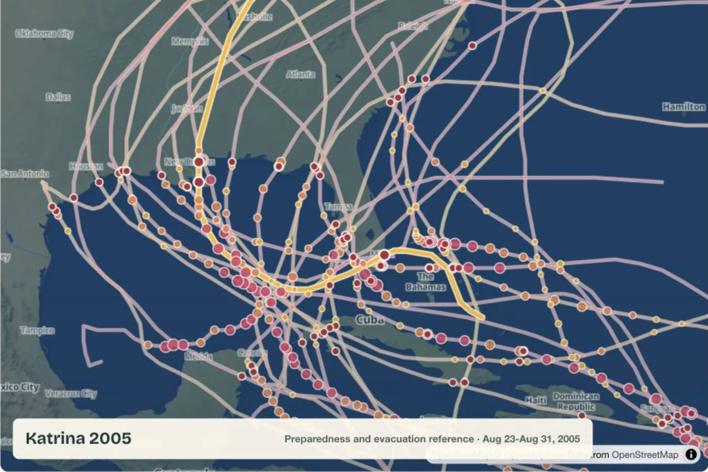

Guías de kits
La biblioteca principal de preparación. Cada kit incluye la guía completa más su lista de verificación imprimible.
Si vive en la costa del Golfo o del Atlántico, la temporada de huracanes es parte de su calendario. Este sitio cubre la preparación: qué empacar, qué entender y por dónde empezar.

Guías costeras
El riesgo local cambia el kit estándar. Elija una guía regional para conocer las agencias, los peligros y las adiciones que importan donde vive.
Actualización de la temporada 2026
Este no es un rastreador en vivo.
Este informe se actualiza manualmente y puede estar desactualizado por horas. No lo use para decisiones de evacuación, refugio o de tiempo. Obtenga información actual en:
Actualizado el 10 de octubre a las 10 a.m. CDT: el aviso 16 del Weather Prediction Center sitúa al ciclón postropical Isaias a unas 50 millas al sur de Birmingham, Alabama, con vientos máximos sostenidos de 35 mph. El sistema se mueve hacia el nor-noroeste a 10 mph y se espera que gire hacia el noreste entre esta noche y el domingo. Hay vigilancias de inundación en partes del sureste y el sur de los Apalaches; hay un aviso de vientos fuertes para el noreste de Alabama, el norte de Georgia y el sur de los Apalaches, y avisos de viento en gran parte del resto del sureste.
Son posibles acumulaciones de 3-6 pulgadas de lluvia, con máximos localizados de hasta 10 pulgadas, desde el noreste de Georgia hasta el oeste de las Carolinas y desde la costa norte de Carolina del Sur hasta el este de Carolina del Norte. Son posibles inundaciones repentinas, urbanas y fluviales, con impactos considerables y deslizamientos de tierra posibles en el sur de los Apalaches. Un par de tornados son posibles hoy en el este de Georgia y las Carolinas, y el oleaje puede producir rompientes y corrientes de resaca que amenazan la vida en gran parte de la costa del Golfo este fin de semana. Consulte su oficina local del National Weather Service para ver los avisos y pronósticos vigentes.
Se trata de cuidado. Usted se prepara porque tiene personas, mascotas, medicamentos, documentos y rutinas que vale la pena proteger. Un kit para huracanes no es una compra de pánico. Es un conjunto de decisiones tomadas con suficiente anticipación para que el toque de tierra no las tome por usted.
La mayor parte del contenido sobre huracanes es aterrador o inútil. Listas de verificación federales con toda la calidez de un aviso legal. Recopilaciones de afiliados donde cada recomendación genera una comisión. Este sitio no es ninguno de los dos: orientación en lenguaje sencillo para hogares de la costa del Golfo y del Atlántico, escrita por alguien que realmente lo pensó bien.
Sin anuncios. Sin enlaces de afiliados. Solo orientación específica, listas de verificación imprimibles y páginas por estado que puede enviarle a alguien antes de que haya una tormenta en el mapa.
Dos formas de entrar: comience con la guía costera de su estado si primero quiere entender su riesgo local, o vaya directamente a la biblioteca de kits si solo necesita una lista.

La biblioteca principal de preparación. Cada kit incluye la guía completa más su lista de verificación imprimible.

Use la geografía primero: riesgo local, adiciones regionales al kit y las fuentes oficiales que debe guardar antes de la temporada.

Compare trayectorias históricas seleccionadas del Atlántico con datos de mejor trayectoria de NOAA/NHC.
Apoyar este sitio
Sin anuncios. Sin enlaces de afiliados. Si esto hizo más clara su preparación ante huracanes, puede ayudar a mantener el sitio gratuito y actualizado.
Nota editorial
Esta página fue revisada el 10 de octubre de 2026. Hurricane Coast es un proyecto independiente de preparación, sin anuncios ni enlaces de afiliados.
La orientación se contrasta con Ready.gov, el National Hurricane Center, el National Weather Service, FEMA y las oficinas estatales o locales de manejo de emergencias enlazadas en la página.
Use esta guía para prepararse con anticipación. Cuando las autoridades locales emitan órdenes de evacuación, instrucciones de refugio, alertas meteorológicas o orientación médica, siga primero esas fuentes oficiales.